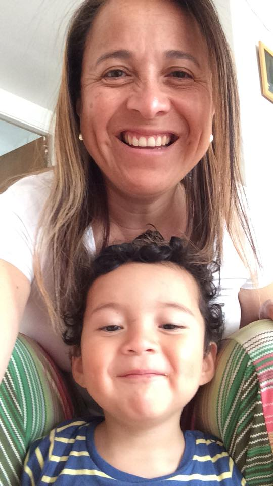

Telefóno de Contacto: +56979511144
ir a mi LinkedinTitulada en la carrera Ingeniería en Ejecución en Administración.Destacando mi aptitud para trabajar en equipo, capacidad para liderar equipos de trabajo, cumplir con plazos establecidos y objetivos del departamento.Habilidades personales: proactiva, trabajo bajo presión, buen carácter, rapidez mental, sentido común, capacidad de liderazgo y ejecución de nuevos proyectos.
| Años | Empresa | 2010-2018 | Validate |
|---|---|
| 2005-2009 | Estudio de Comunicación |